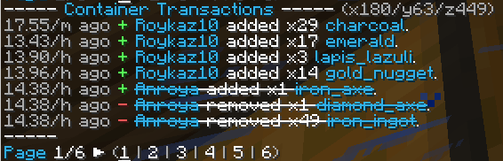

Para saber con que bloques, cofres, puertas, etc. Un jugador a tenido interacciones (romper bloques, colocar bloques, agarrar cosas, dejas cosas o abrir puertas) eso lo podemos saber con el plugin llamado coreprotect
Para acceder a todos los comandos de este pluign usamos /co
Sintaxis de comandos:
/co i:
Entramos en modo de inspección, cada bloque con el que interactuemos nos dará información de este bloque con horas exactas, para desactivar este modo solo ingresa el comando de nuevo. Forma abreviada del comando /co inspect

CRITERIOS DE COREPROTECT
⚠ Presta mucha atención, pues coreprotect es algo complejo ⚠
usuario
Es al jugador que se van a revisar sus logs.
action:
Es la acción que vamos a revisar en específico y los criterios a destacar son:
- +block: bloques colocados
- -block: bloques quitados
- kill: entidades matadas
- +item: item agarrado
- -item: item dropeado
time:
El tiempo máximo con el que se va a revisar las interacciones del usuario con el entorno los criterios de entrada son un numero acompañado de una medida de tiempo donde:
- s: segundos
- m: minutos
- h: horas
- d: dias
- w: semanas
include:
La tag del bloque específico que vamos a buscar en todos sus logs, es decir si buscamos solo bloques de tag "ancient_debris" solo nos proporcionará la lista con estos bloques ningún otro
exclude:
La tag del bloque específico que vamos a EXCLUIR en todos sus logs, es decir si buscamos solo bloques de tag "dirt" solo nos proporcionará la lista de todos los bloques e interacciones menos de la tag "dirt"
radius:
El radio de bloques en especifico que se revisará, a su ves este permite entrada de tags por mundo
- #global: tres dimensiones overworld, nether y end
- #world: solo dimensión del overworld
- #world-nether: solo dimensión del nether
- #world-end: solo dimensión del end
/co rollback:
Deshacer acciones, es decir volver los bloques o cofres a su estado anterior, por ejemplo si queremos hacer un rollback de una sala de cofres por que el usuario: EG_49 robó los cofres hace una hora ejecutaremos este comando:
/co rollback EG_49 radius: 10 time: 1h
⚠ Cuidado con los rollbacks pues estos pueden afectar el progreso de un jugador ⚠
/co lookup:
Revisar con que bloques interaccionó un jugador, o solo saber que interacciones han tenido ciertos bloques, por ejemplo si queremos revisar solo los jugadores que han minado "ancient_debris" en un día
/co lookup include: ancient_debris time: 1d
Este es un ejemplo de rollback exitoso, nos podemos fijar por que está tachado las interacciones de esa persona en ese cofre exacto
